29–31 Fenwick Street is a two-family wood-frame house in the Winter Hill neighborhood of Somerville, Massachusetts. It was built in 1903 as a speculative duplex, during the post-1900 residential infill that followed the extension of Fenwick Street through to Jaques Street.
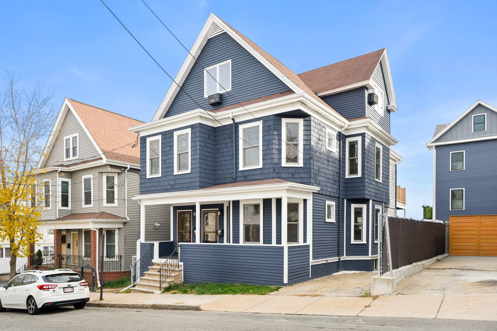
Built in 1903; first occupied in late 1903 or early 1904.
The Somerville City Directories establish this directly. Listings on Fenwick Street end at house number 25 in the 1900, 1901, 1902, and 1903 editions. Numbers 29 and 31 first appear in 1904.
Directories of this era were canvassed in the late summer and fall of the previous year — so a 1904 listing means the units were complete and occupied by late 1903.
The maps corroborate:
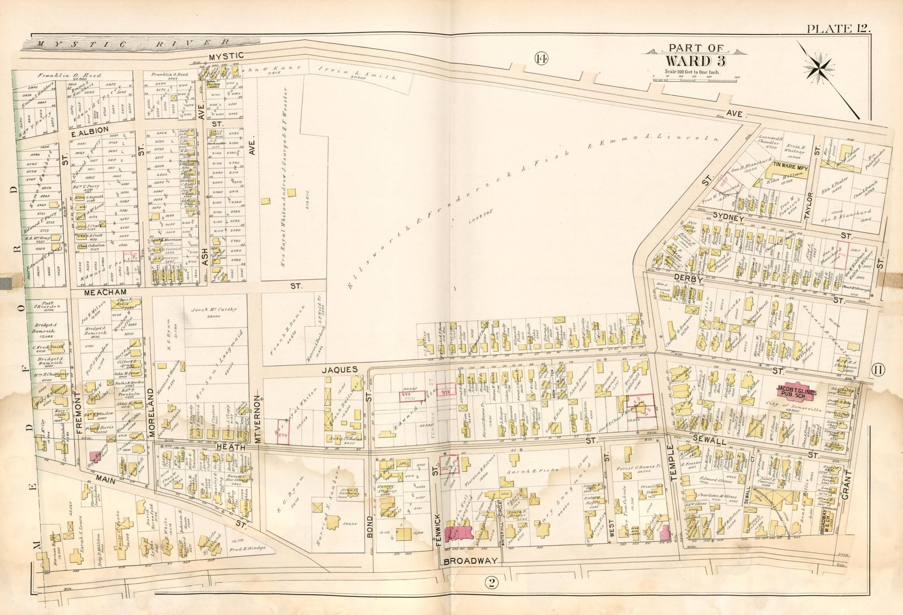
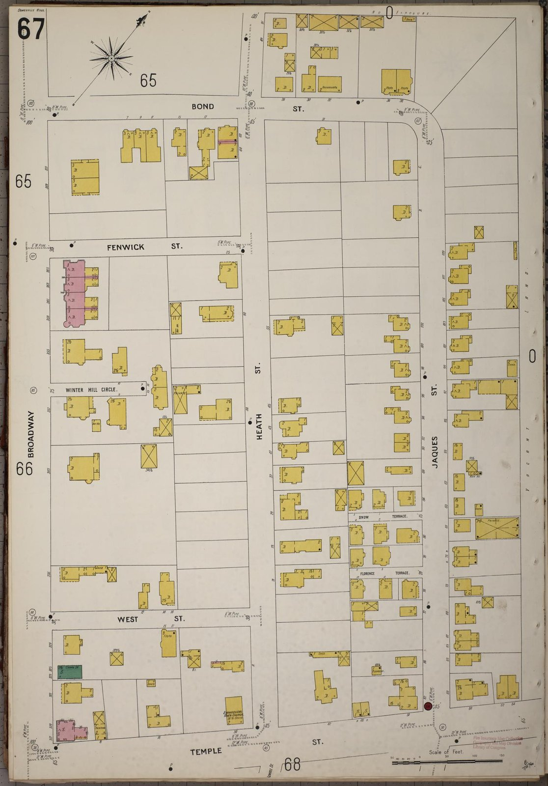
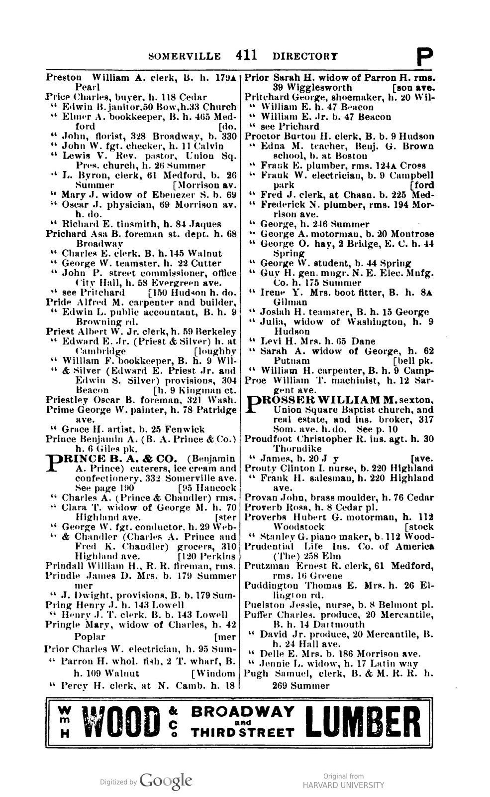
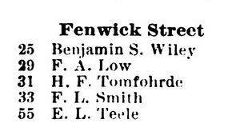
In late 1897 or early 1898, an elderly Somerville man named Edward Foote died. He had owned a substantial parcel of land on Winter Hill — a quiet, half-built corner of the city where Broadway curved up the slope and the streets behind it trailed off into pasture. His will named his son, Edward H. Foote, as executor. On June 28, 1898, Edward H. walked into the Middlesex County Probate Court in Cambridge and was sworn in to administer his father's estate. The first major thing the heirs did was decide what to do with the land.
They decided to subdivide it.
On May 26, 1899, a civil engineer named Charles D. Elliot laid out the parcel as a grid of building lots, and recorded the plan in Middlesex South District Deeds. The middle lot in the row, a 38-foot-wide rectangle 74 feet deep, was numbered three. A new street called Fenwick was drawn along its northwestern boundary. The address at the time was not yet anything — just Lot 3 on a plan in Book 116. Today we call that address 29–31 Fenwick Street.
Sometime in the next four years, Lot 3 came into the hands of a man named Henry A. Peck. Henry was a Somerville native, born around 1851 in Cambridge to a grocer named John Peck (Vermont-born) and his wife Phebe (Maine-born, maiden name Barnard). By the time Henry was 52, he had become prosperous enough to invest in real estate. He acquired Lot 3 and almost certainly had a duplex built on it. And on June 20, 1903, he did something that was both ordinary for its era and quietly tender: he transferred title in the brand-new duplex to his elderly widowed mother, Phebe, then 76 years old. The income from renting both halves would be hers for the rest of her life.
Phebe Peck never lived at 31 Fenwick. She stayed at 41 Pearl Street, the East Somerville house she had occupied for decades, where by 1900 she shared rooms with her widowed half-brother Porter Roberts and her widowed half-sister Jane Sheperd. The three Maine-born siblings — two whose surname was Roberts and one whose surname had been Barnard — were consolidating into a single household in their seventies and eighties, attended by a series of live-in domestic servants (Irish-born Margaret Mountain in 1860, then Mary Sullivan in 1900, then Isabella McKay by 1910). It was the kind of household viewers of The Gilded Age would recognize at a glance: elderly Yankee Protestant widows sharing rooms, a domestic servant at the kitchen door, and the rental income from a property in another part of the city flowing quietly back to keep everyone comfortable. The first tenants of 31 Fenwick were paying their rent to a small-scale Yankee widow landlady on Pearl Street.
The first family to live at 31 Fenwick walked in five months after Henry signed the deed to his mother. On a November day in 1903, Heinn F. Tomfohrde I — a 27-year-old clerk who worked in Boston — married Betsey L. Simonds, a 23-year-old whose father Lewis had died a decade earlier in Antrim, New Hampshire. The newlyweds took the 31 side of the duplex. They brought with them Betsey's widowed mother, Henrietta Simonds (born in Maine, like Phebe), who would live with them for the rest of her life. The duplex they walked into was new construction in the most fashionable Victorian-into-Edwardian style of the moment — stained glass at the stairway and around the parlor windows, ornate moulding above the doors, hardwood floors throughout, a stone foundation in the cellar, and a coal-fired furnace whose iron ductwork still survives in the basement today. Three years later their first son, Heinn Friedrich Tomfohrde Jr., was born at 31 Fenwick.
Heinn F. I was the son of German Lutheran immigrants from the Stade district of Lower Saxony, who had settled at 329 Broadway on Winter Hill, just up the slope from 31 Fenwick. His father, also named Heinn, had a downtown Boston business address at 45 Court Street. The Tomfohrdes were a still-translating family — keeping the Low German “Heinn” instead of Anglicizing it to Henry, even though the very man whose mother now held the deed to their new house was named precisely that. By 1908, with a second son Karl Martin on the way, the Tomfohrdes had outgrown the Fenwick duplex. They bought a freestanding house at 57 Rogers Ave in West Somerville and never came back. Heinn F. I would spend the next thirty years working his way up from clerk to piano-retail cashier to self-employed insurance broker, eventually retiring in Arlington with his wife after raising two sons.
Next door at 29 Fenwick, beginning in the same year, was a railroad conductor named Frank A. Low. He shows up in the 1904 Somerville Directory and then largely disappears from the record. The full occupancy chain at 29 Fenwick is one of the largest things we still don't know.
When the Tomfohrdes left in 1907, Phebe Peck's next tenant at 31 Fenwick was Jesse G. Taft, a state prison officer, and his wife Ella G., both born in the early 1860s. They had no children. They stayed for thirteen years. Jesse and Ella were the kind of long-quiet-tenancy couple that almost never makes it into a historical narrative — same job, same house, same childless arrangement, year after year. The 1920 US Census records them at 31 Fenwick with their tenure category marked “R” (rented), and the same census reveals that by then Phebe Peck had been dead five years.
She had died on August 9, 1915, at 41 Pearl Street, of stomach cancer. She was 88 years, 9 months, and 22 days old, and her attending physician had been treating her for the eleven months before her death. Her grandson Arthur S. Peck was living with her at the end and filed her death certificate the day after she died. They buried her at Woodlawn Cemetery in Everett — the Yankee Protestant cemetery for greater Boston — three days later.
Phebe's estate, working through the multi-year probate process and through the disruption of the First World War, did not sell 31 Fenwick for three and a half years. The Tafts kept paying rent the whole time, now to the estate rather than to Phebe directly. Then, on a January afternoon two months after the November 1918 armistice, the estate of Phebe A. Peck signed a stack of deeds, and a young Anglo-Irish immigrant couple signed two simultaneous mortgages, and a duplex changed hands.
John Logue had arrived in America in 1907, Irish-born to English parents — a Protestant Anglo-Irish working-class kid from somewhere in the Ulster diaspora. By 1919 he had been working as a machinist on the Boston Elevated Railway for years, had married another Ireland-born immigrant named Margaret Bredin, and had four young children to settle. On January 6, 1919, John and Margaret bought 31 Fenwick — well, the parcel that the city called 29 Fenwick, even though they would live in the 31 side — for $3,850. They financed almost all of it: $3,100 from Somerville Trust Company, $250 from a private lender named Thomas B. Constant of East Boston, and about $500 in cash that probably represented their entire savings. They paid off the small private second mortgage in six months. The Somerville Trust primary mortgage they would carry for years.
They held the house for the next forty-five years. Across those four-and-a-half decades, the duplex got incrementally modernized in the way most working-class Boston-area houses did: the coal furnace gave way to a steam-radiator system, gas fixtures were replaced with electric, and the basic 1903 footprint was kept intact while the systems underneath were quietly upgraded.
By the 1930 census, the Logues were a family of six. By the 1940 census, four of the children were grown adults still living at home — Charles, Helen Grace (a stenographer in a wholesale plumbing firm), John H. (a machine operator whose name was followed by a phrase that quietly devastates: “unable to work”), and Joseph W. (a milkman who, with his $1,800 annual wage, was actually outearning his Boston Elevated Railway father). The 1940 census was a snapshot of a Depression-era working-class household navigating the strange economic inversions of the moment: the railway machinist's hours had been cut, but milk delivery had stayed steady.
Then in February 1943 John Logue died. A year later, in 1944, his son John H. — the one who had been “unable to work” — followed him. The household contracted around the surviving women. By 1950 only Margaret (now 68 and widowed for seven years) and Helen Grace (now 40, never married, still in the wholesale plumbing job) were left at 31 Fenwick.
Margaret Logue died on April 3, 1963, age 81.
Her daughter Helen sold the family home a year later, on April 30, 1964, while serving as Administratrix of her mother's estate (the term used on the deed itself). The buyers were an Italian-American Somerville couple, Salvatore and Antoinette B. Spinosa, who paid $17,500 and took title as tenants by the entirety. The Spinosas moved into 31 Fenwick and lived there for nine years.
We don't know exactly when Salvatore exited the picture, but we know that in October 1970 he and Antoinette signed a brief two-page deed transferring their joint marital title into her name alone for “less than one hundred dollars.” Three years later, when Antoinette sold the house, she signed the new deed simply as “unmarried” — which in Massachusetts deed convention could mean widowed or divorced. The October 1970 deed has the quiet shape of a couple preparing for one or the other, but the records that would tell us which are still to be found.
On July 5, 1973, Antoinette sold 31 Fenwick to a young Catholic couple who had just married that year and were moving up from a rented apartment at 218B Quincy Shore Drive in North Quincy. They paid $36,000.
Francis G. Sweeney and Helen M. Sweeney held 31 Fenwick for the next fifty years. It is the longest single ownership in the house's entire history — second only to the Logues' forty-five, both households long-tenured working-class families raising children at the same Winter Hill address across decades of American change.
They had three children at 31 Fenwick: Kevin, Kerry, and Kristen. Over the years they also took on the major modernizations a 1903 house eventually needs: rewiring all the electrical, and sheetrocking over the original lath-and-horsehair plaster on many of the walls and ceilings. They refinanced through Medford Savings Bank in 1990 — a typical mid-life refinance to pay for kids' college or home renovations — and took a $200,000 home equity line of credit in 2010 (paid off six years later). Their two long mortgages stayed on the title, getting absorbed through a sequence of bank mergers (Medford Savings → Citizens Bank of Massachusetts → RBS Citizens → Citizens Bank). At the 2025 sale, the 1990 mortgage was finally discharged after 35 years on the record.
Francis Sweeney died on May 12, 2021. Helen took title by survivorship and lived alone in the house for two more years.
Helen Sweeney died on April 3, 2023 — exactly sixty years to the day after Margaret Logue had died at the same address. Two matriarchs of 31 Fenwick, both of Catholic working-class lineages, both having spent their entire adult lives within blocks of where they died, ending their tenures on the same April day, six decades apart, in the same upstairs rooms.
After Helen's death, the three Sweeney children inherited 31 Fenwick jointly. They held it for nearly two years before selling on April 24, 2025, to a Winchester small-business owner and hopeful landlord named Erik Van Stry, for $1,150,000 — quite a bit more than the $36,000 the Sweeneys had paid Antoinette Spinosa for it 52 years earlier. Erik intended to rent the house out. He did a light renovation — removing the wall-to-wall carpet and restoring the original over-120-year-old wood floors underneath, painting the inside and outside, lightly updating the bathrooms with a new sink and vanity, replacing the kitchen flooring, and building a few walls to create more rooms to rent. He couldn't find any tenants. In December 2025, he sold.
The buyer was Christian Hatch. The deed was recorded December 4, 2025, in Book 84962, Page 59, for $1,299,000. The price progression across the documented sales tells its own quiet story of Boston-area real estate: $3,850 in 1919, $17,500 in 1964, $36,000 in 1973, $1,150,000 in April 2025, and $1,299,000 by year's end. Christian came to 31 Fenwick from an apartment in Quincy Center — the same Quincy-to-Somerville migration the Sweeneys had made fifty-two years earlier, when they left their own apartment at Wollaston Beach for the duplex on Winter Hill. The same coastal-suburb-to-Winter-Hill direction. The same destination. Half a century apart.
What 31 Fenwick has been across its 122 years is a small-scale demographic history of greater Boston, compressed into one parcel. The Yankee Protestant Pecks built it and rented it out for the first two decades to German Lutheran immigrant newlyweds and then to a quiet Anglo-Protestant state-prison-officer couple. The Anglo-Irish Protestant Logues bought it in 1919, just two months after the Great War ended, and raised four working-class American children in it through the Depression and the Second World War. The Italian-American Catholic Spinosas took it through the late 1960s and into the 70s. The Irish-Catholic Sweeneys held it for half a century and raised the third generation of children in those rooms. And the modern era — the 2025 estate sale, the brief investor interlude, and Christian moving in upstairs at 31 while renting 29 to the next family who needs a place to start — turns out to be more of the same. An owner-occupant on Winter Hill. The upper apartment for the family in residence. The lower apartment for the next ones arriving. The same arrangement the Logues kept going for forty-five years after they bought the place in 1919.
Each family arrived in the house slightly more prosperous than the one before. Each family arrived with some combination of immigration, marriage, separation, death, and inheritance behind them. All of them slept in the same upstairs bedrooms their predecessors had used. None of them knew they were each in turn standing in for the next chapter of a story that would still be going on long after they were gone.
The house outlived all of them. It will outlive many more. The lumber that frames the rooms came from New England forests that had already stood for generations before the saw touched them. The fieldstone in the cellar walls is older than the country, older even than the language we use to talk about it. The wood and the stone have held this house up since 1903, silently providing, protecting, watching over each family in turn — and they will keep doing the same for every family still to come.
A 2½-story wood-frame duplex on a mortared stone foundation. Its form is typical of speculative two-family construction in Somerville's Late Industrial Period (1870–1915):
The exterior was recently renovated. The photograph below shows the pre-renovation appearance.
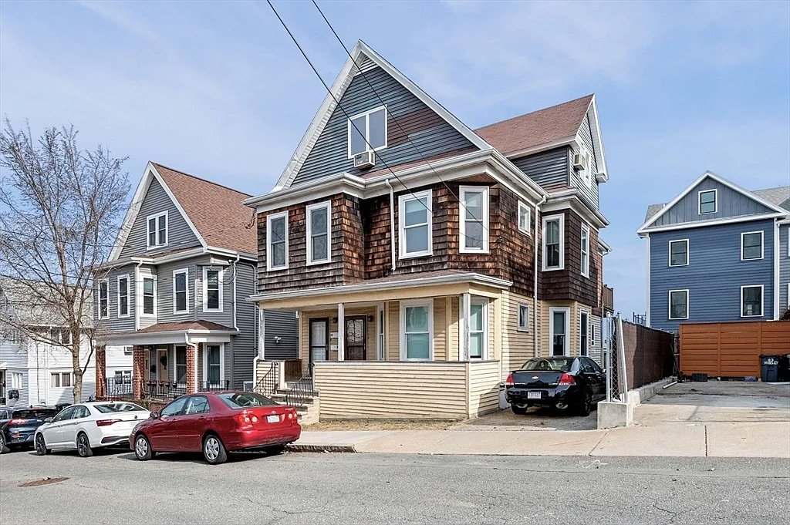
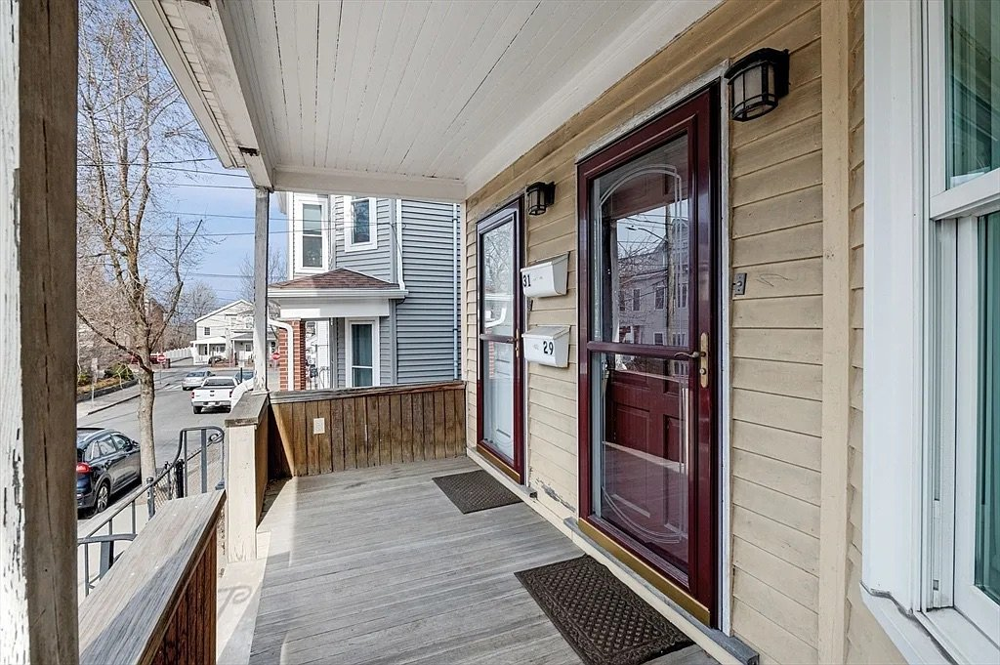
The two units share a basement and divide the floors as follows:
Each unit has its own private entrance from the front porch.
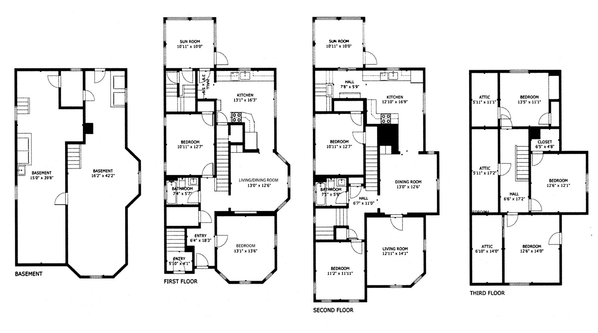
The interior retains substantial original character. Surviving details include:
The overall trim style is transitional Edwardian — more restrained than high-Victorian ornament, but more decorative than the Craftsman work that followed a decade later.
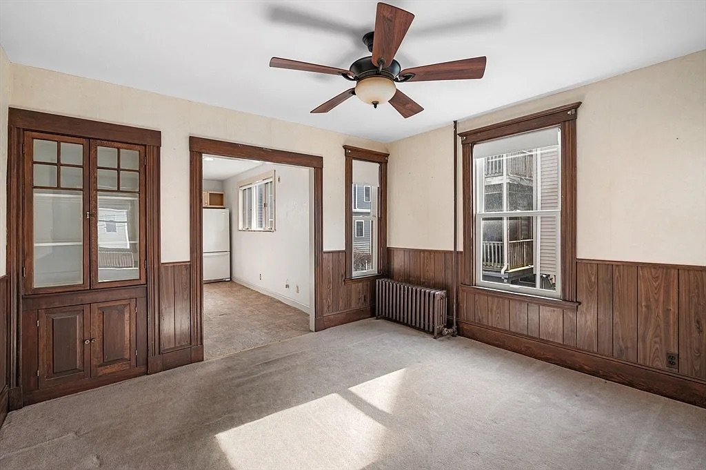
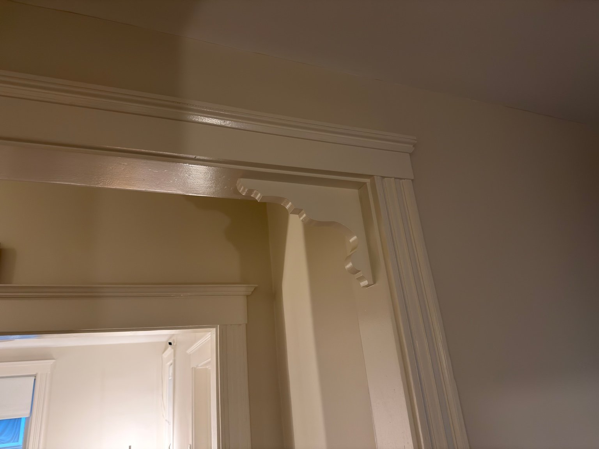
Stained glass. Two original leaded windows remain, both with non-figurative geometric patterns in muted lavender, green, and aqua:
The style is characteristic of Edwardian and early Arts-and-Crafts residential glass that became common in Boston-area middle-class housing between approximately 1905 and 1912. Installation in 1903 places these windows at the leading edge of that adoption.
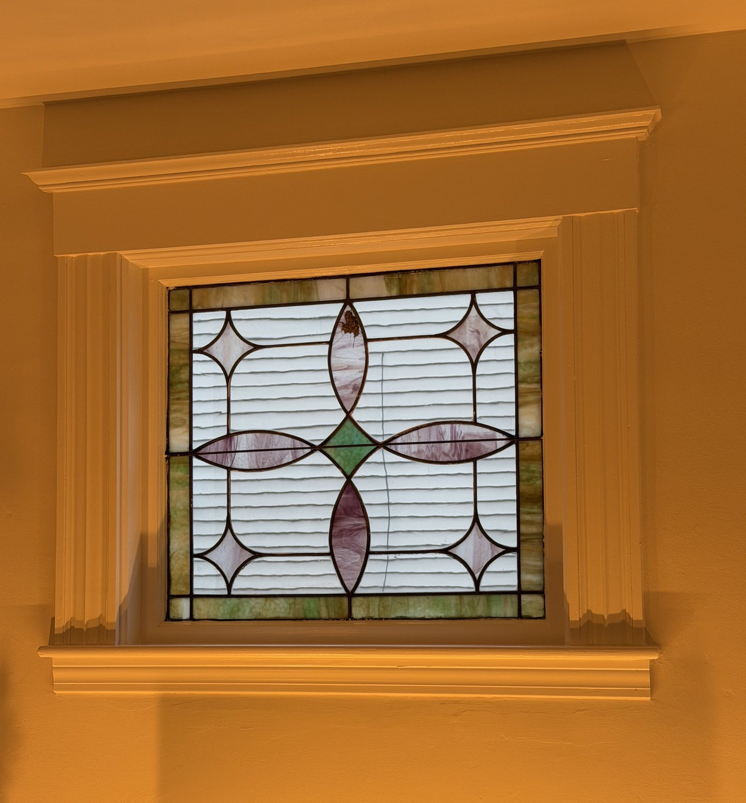
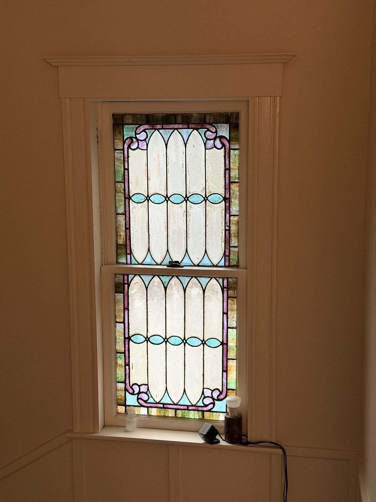
Heating. The house is currently heated by cast-iron steam radiators — typical of turn-of-the-century New England housing, and an established technology by 1903.
The basement also holds remnants of an earlier gravity warm-air duct system: hand-formed sheet-metal ducts, partially crushed, abandoned in place. The house went through at least one major heating-system change in its early decades.
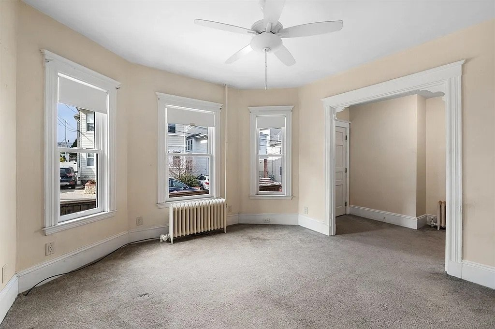
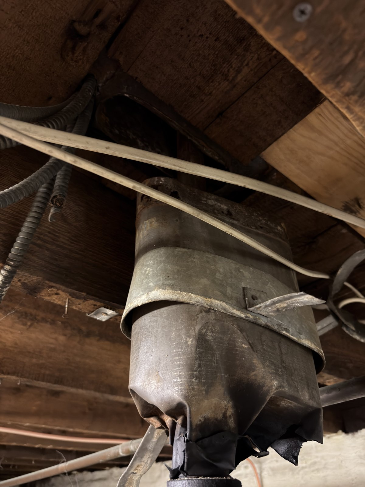
Wiring. Originally knob-and-tube — consistent with a 1903 installation. Since removed and replaced with modern wiring.
Plumbing. Remnants of lead service piping remain. Lead was standard in urban housing built before approximately 1920.
Foundation. Mortared stone — common in New England residential construction through the early 1900s. 1903 falls at the late end of stone-foundation use, before poured concrete became the standard.
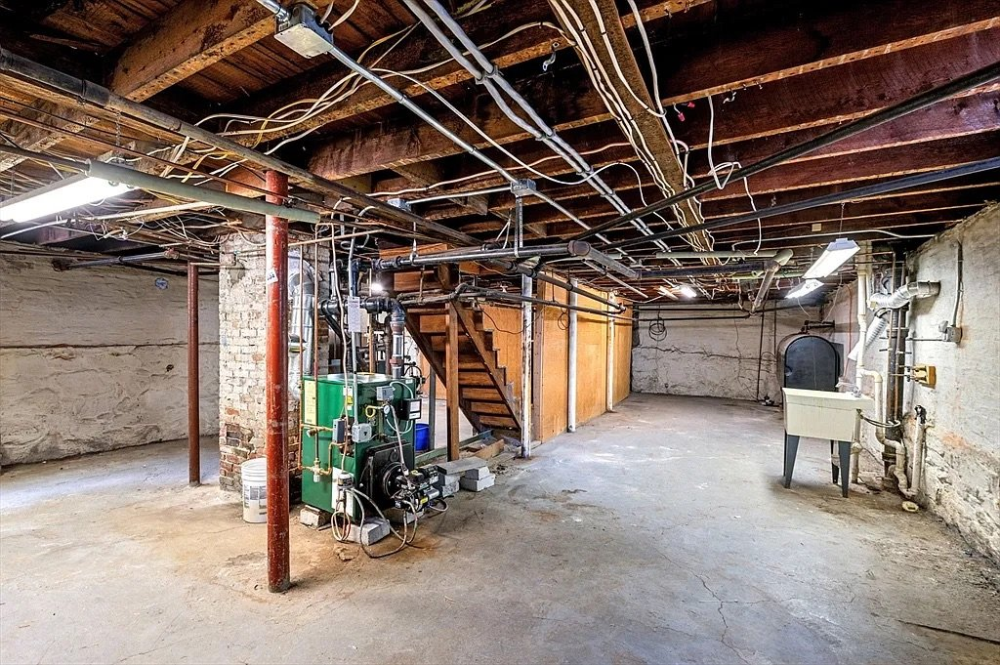
29–31 Fenwick is a well-preserved example of the speculative two-family house that came to dominate Somerville's residential fabric in the early 20th century. The Massachusetts Historical Commission's 1980 reconnaissance survey identifies Colonial Revival and late Queen Anne two-families as the predominant type produced by the city's suburban growth in the Late Industrial Period (1870–1915), built along trolley-served corridors like Broadway.
sanborn03849_001).{kind=link}
{kind=link}
{kind=link}
{kind=link}
{kind=link}
{kind=link}
{kind=link}
{kind=link}
{kind=link}
{kind=link}
{kind=link}